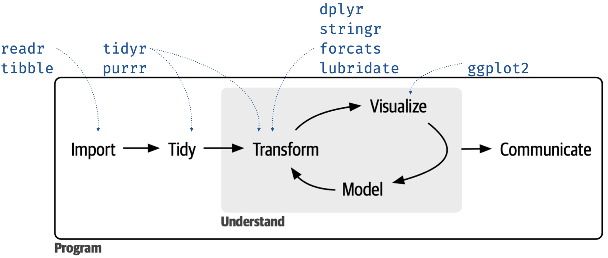
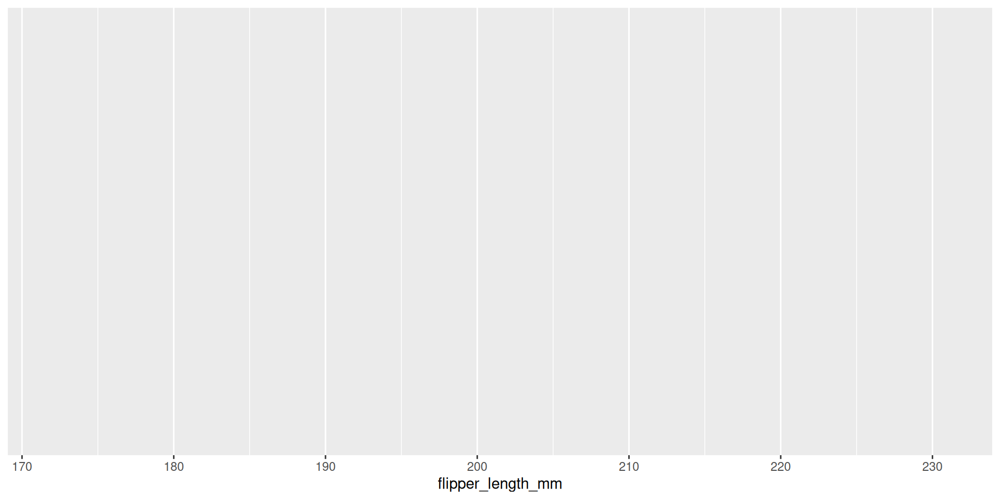

Data Science Lifecycle und Visualisierung
Unit 1
Willkommen! üëã
Themen
- Data Science Lifecycle
- Daten visualisieren
- Tidy data, Daten aufräumen und umwandeln
- mit Quarto kommunizieren
Kennenlernen
- Dienststelle / Aufgabe
- was willst du lernen?
- was machst du gerne ausserhalb der Arbeit?
Ziele für heute
- die sechs Elemente des Data Science Lifecycles aufzählen
-
aesthetic mappings für Datenvisualisierung im
{ggplot2}R Package identifizieren - vier Komponenten einer Quarto-Datei identifizieren
Data Science Lifecycle
Reproduzierbare Datenanalyse
❓
- Tabellen und Grafiken aus Daten und Code reproduzieren?
- Code in anderen Skripten verwenden?
- Stimmt meine Umgebung mit der meiner Kollegen/innen überein?
Kurs-Werkzeuge
Reproduzierbare Datenanalyse
Hallo R! üëã
R-Packages
Du benutzt R durch packages
…die functions enthalten
RStudio
RStudio
RStudio
RStudio
RStudio
RStudio und R-wesentliches
Break ☕ üçµ üçú
10:00
Tidyverse

Data Science Lifecycle

- Text → Markdown
Code und Text → inline code
`​r sqrt(1/5)` → 0.4472136
Lasst uns eintauchen!


```{r}
#| code-line-numbers: "|5-7|8|16|22"
#| eval: false
un_votes |>
inner_join(un_roll_calls, by = "rcid") |>
inner_join(un_roll_call_issues, by = "rcid") |>
filter(country %in% c("Algeria", "Switzerland", "United Kingdom")) |>
mutate(
year = year(date),
issue = fct_relevel(issue, "Arms control and disarmament"),
issue = fct_relevel(issue, "Palestinian conflict", after = Inf)
) |>
group_by(country, year, issue) |>
summarise(percent_yes = mean(vote == "yes")) |>
ggplot(mapping = aes(x = year, y = percent_yes, colour = country)) +
geom_point(alpha = 0.4, size = 1) +
geom_smooth(method = "loess", se = FALSE) +
facet_wrap(~issue) +
scale_y_continuous(labels = label_percent()) +
labs(
title = "Percentage of 'Yes' votes in the UN General Assembly",
subtitle = paste(un_roll_calls |> summarise(min(year(date))) |> pull(), "to", un_roll_calls |> summarise(max(year(date))) |> pull()),
colour = "Country",
x = "Year",
y = "% Yes"
) +
theme_minimal() +
theme(
text = element_text(size = 8)
)
```Praktikum 01a: UN Votes
RenderoderCtrl + Shift + K,- andere Länder auswählen.
20:00 Praktikum 01b: Quarto – Bechdel Test
20:00 Break ☕ üçµ üçú
10:00
Visualisierung
R Package ggplot2

R Package ggplot2
Erste Schritte: Streudiagramm
Voraussetzung
Rows: 344
Columns: 8
$ species <fct> Adelie, Adelie, Adelie, Adelie, Adelie, Adelie, Adel…
$ island <fct> Torgersen, Torgersen, Torgersen, Torgersen, Torgerse…
$ bill_length_mm <dbl> 39.1, 39.5, 40.3, NA, 36.7, 39.3, 38.9, 39.2, 34.1, …
$ bill_depth_mm <dbl> 18.7, 17.4, 18.0, NA, 19.3, 20.6, 17.8, 19.6, 18.1, …
$ flipper_length_mm <int> 181, 186, 195, NA, 193, 190, 181, 195, 193, 190, 186…
$ body_mass_g <int> 3750, 3800, 3250, NA, 3450, 3650, 3625, 4675, 3475, …
$ sex <fct> male, female, female, NA, female, male, female, male…
$ year <int> 2007, 2007, 2007, 2007, 2007, 2007, 2007, 2007, 2007…Unser Ziel
ggplot(
data = penguins,
mapping = aes(
x = flipper_length_mm,
y = body_mass_g
)
) +
geom_point(mapping = aes(colour = species, shape = species)) +
geom_smooth(method = "lm") +
labs(
title = "Body mass and flipper length",
subtitle = "Dimensions for Adelie, Chinstrap, and Gentoo Penguins",
x = "Flipper length(mm)",
y = "Body mass (g)",
colour = "Species",
shape = "Species"
) +
scale_colour_colorblind()Plot Erstellen

Plot Erstellen
Plot Erstellen
Plot Erstellen
Aesthetics und Schichten
Aesthetics und Schichten
Aesthetics und Schichten
Aesthetics und Schichten
Aesthetics und Schichten
ggplot(
data = penguins,
mapping = aes(x = flipper_length_mm, y = body_mass_g)
) +
geom_point(aes(colour = species, shape = species)) +
geom_smooth(method = "lm") +
labs(
title = "Body mass and flipper length",
subtitle = "Dimensions for Adelie, Chinstrap, and Gentoo Penguins",
x = "Flipper length (mm)",
y = "Body mass (g)",
color = "Species",
shape = "Species"
) +
scale_colour_colorblind()Aesthetics und Schichten
Code
ggplot(
data = penguins,
mapping = aes(x = flipper_length_mm, y = body_mass_g)
) +
geom_point(aes(colour = species, shape = species)) +
geom_smooth(method = "lm") +
labs(
title = "Body mass and flipper length",
subtitle = "Dimensions for Adelie, Chinstrap, and Gentoo Penguins",
x = "Flipper length (mm)",
y = "Body mass (g)",
color = "Species",
shape = "Species"
) +
scale_colour_colorblind()Praktikum 01c
20:00 Break ☕ üçµ üçú
10:00
Aesthetics-Optionen
- colour ✅
- shape ✅
- size
- alpha (transparency)
Faceting
Faceting

Mapping vs. Setting ❓
Mapping vs. Setting
Workflow: Rechtschreibung
Namen
⚠️ Case matters…
… and so does punctuation!
Hausaufgabe
R for Data Science
- Das Buch für den Kurs
- Kostenfrei Online
- Tiydverse-Philosophie

Danke! üåë
Slides created via revealjs and Quarto.
Access slides as PDF.
All material is licensed under Creative Commons Attribution Share Alike 4.0 International.

rstatsBL - Data Science mit R